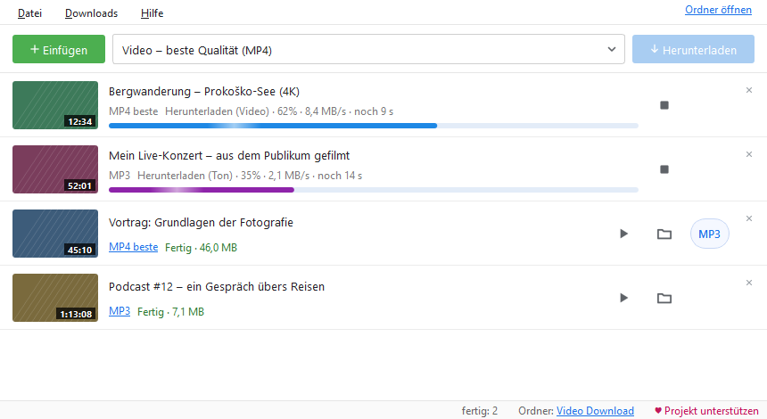

Video und Audio auf deinem PC.
Mit einem Klick.
Eine kostenlose Windows-App: MP4 in voller Qualität oder MP3, direkt aus dem Browser oder aus einem kopierten Link.
Installation: Windows kann eine Warnung zeigen. Der Installer ist noch nicht digital signiert, daher zeigt Windows eventuell „Der Computer wurde durch Windows geschützt“. Prüfe, dass die Datei von dieser Seite stammt, und klicke dann auf Weitere Informationen und Trotzdem ausführen. Updates aus der App heraus zeigen diese Warnung nicht.
Die App ist für eigene Videos gedacht, für Inhalte, für die du die Erlaubnis des Urhebers hast, und für Inhalte unter freier Lizenz. Mit dem Herunterladen akzeptierst du die Nutzungsbedingungen. DRM-geschützte Inhalte werden nicht heruntergeladen.

Alles, was du brauchst – nichts, was du nicht brauchst
Ein einfaches Fenster – und darunter alles, was du von einem guten Downloader erwartest.
MP4 bis zur besten Qualität
Beste, 1080p, 720p oder 480p. Bild und Ton werden zu einer MP4 zusammengeführt, die überall läuft.
Nur Ton: MP3 oder M4A
Für Vorträge, Podcasts und Musik. Eine fertige MP4 wird mit einem Knopf zur MP3.
Browser-Erweiterung
Ein Knopf „Laufendes Video herunterladen“ und ein Rechtsklick auf jeden Link und jedes Video in Firefox, Edge und Chrome. So wird sie installiert
Link kopieren, fertig
Die App bemerkt einen kopierten Link und fügt ihn der Liste hinzu. Einen Link ins Fenster ziehen geht auch.
Liste, Playlists, mehrere gleichzeitig
Ganze Playlists, bis zu 4 Downloads gleichzeitig, automatisch ein neuer Versuch, wenn die Verbindung abbricht.
Ausschnitte, Untertitel, Cover
Nur ein Teil eines Videos von–bis, Untertitel in der MP4 und das Vorschaubild als Cover der Datei.
Helles und dunkles Design
Oder wie Windows. Der Fortschritt erscheint auch auf dem Taskleisten-Knopf, und am Ende kommt eine Benachrichtigung.
Immer aktuell
Die App sucht selbst nach neuen Versionen und aktualisiert den Teil, der Webseiten liest, ohne Neuinstallation.
So funktioniert's
In weniger als einer Minute von der Installation zur ersten Datei.
Installieren
Starte den Installer. Er braucht keine Administratorrechte und installiert nichts anderes auf deinem PC.
Link hinzufügen
Link kopieren, auf „Einfügen“ klicken oder mit der Erweiterung direkt aus dem Browser herunterladen.
Wählen und herunterladen
MP4 oder MP3, dann „Herunterladen“. Die Datei wartet im Ordner Video Download.
Neuigkeiten
Dieselbe Liste wie in der App (Hilfe → Was ist neu).
0.9.6 26.9.2026
- Updates sind digital signiert: Das Programm installiert nur eine von uns signierte neue Version, selbst wenn jemand die Datei am Veröffentlichungsort austauscht.
- Beim ersten Start ein kurzer Hinweis, dass das Programm kopierte Links beobachtet, mit einer Schaltfläche zum sofortigen Abschalten.
- Übrig gebliebene temporäre Cookie-Dateien (nach einem plötzlichen Abbruch) werden beim nächsten Start gelöscht; lange Listen brauchen weniger Speicher.
- Die Verbindung zum Browser-Add-on kommt besser mit langsamen oder hängenden Anfragen zurecht.
0.9.5 26.9.2026
- 1080p, 720p und 480p erhalten eine Markierung im Dateinamen, daher gilt eine andere Qualität desselben Videos nicht mehr als „bereits heruntergeladen“.
- Zwei Videos mit gleichem Titel (Dateiname ohne ID) werden nicht mehr verwechselt; dasselbe Video, das zweimal gleichzeitig startet, wartet auf das erste.
- „Fertig“ erst, wenn die Datei existiert und lesbar ist; die MP3-Umwandlung lässt sich immer abbrechen.
- Das Schließen friert das Fenster nicht mehr ein; das Update wartet auch auf MP3-Umwandlungen.
0.9.4 26.9.2026
- Stabilität: Derselbe Link kann direkt nach „Stopp“ erneut hinzugefügt werden.
- Das Aktualisieren des Seitenlesers (yt-dlp) löscht die laufende Version nicht mehr; funktioniert die neue nicht, kehrt das Programm zur vorherigen zurück.
- Ein beschädigter Verlauf oder eine beschädigte Liste bringt das Programm nicht mehr zum Absturz; schlägt das Speichern fehl, meldet es das Programm.
- Die Deinstallation entfernt auch die Firefox-Verbindung; das Tempolimit wird nur auf tatsächlich laufende Downloads verteilt.
Die App ist kostenlos
Ohne Werbung, ohne Tracking und ohne „Premium“-Version. Wenn sie dir nützt, kannst du ihre Entwicklung freiwillig unterstützen. Ein Beitrag schaltet nichts frei: Die App ist für alle gleich.
♥ Über PayPal unterstützen Mit der Handykamera scannen
Mit der Handykamera scannenHilfe
Die häufigsten Fragen. Wenn etwas nicht klappt: in der App Hilfe → Problembericht speichern, dann das Problem melden und den Bericht anhängen. Meldungen sind öffentlich: keine Passwörter oder persönlichen Daten angeben.
Windows meldet „Der Computer wurde durch Windows geschützt“. Was nun?
Die App hat noch keine kostenpflichtige digitale Signatur. Klicke auf „Weitere Informationen“ → „Trotzdem ausführen“. Die SHA-256-Prüfsumme des Installers steht bei jeder Version auf GitHub.
Ein Video lässt sich plötzlich nicht mehr herunterladen.
Webseiten ändern sich oft. Hilfe → Seiten-Reader aktualisieren (yt-dlp), dann erneut versuchen.
Warum werden Livestreams nicht heruntergeladen?
Ein Livestream hat kein Ende, der Download würde also nie fertig. Lade ihn herunter, wenn er vorbei ist und die Aufzeichnung veröffentlicht wurde.
Was sendet die App ins Internet?
Nur das Nötige: Der Link, den du herunterlädst, geht an diese Webseite, und die Update-Prüfung an GitHub und PyPI. Keine Konten, Statistiken oder Tracking.